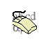

10. Input streams and devices
10.1 In Versions 1 and 2, the player's commands can only be drawn from the keyboard.
10.2 In Versions 3 and later, the player's keypresses are drawn from the current "input stream". There are two input streams: numbered 0 (the keyboard) and 1 (a file containing commands). Other inputs (mouse clicks or menu selections), if available, are also implemented as keypresses (see below).
10.2.1 The format of a file containing commands must be the same as that written in output stream 4.
10.2.2 The game can change the current input stream itself, using the opcode input_stream. It has no way of finding out which input stream is currently in use. An interpreter is free to change the input stream whenever it likes (e.g. at the player's request) or, indeed, to run the entire game under input stream 1 (for testing purposes).
10.2.3 When input stream 1 is first selected, the interpreter may use any method of choosing a file name for the file of commands. (Good practice is to use the same conventions as when choosing a filename for output to stream 4.)
10.2.4 When the the current stream is stream 1, the interpreter should not hold up long passages of text (by printing "[MORE]" and waiting for a keypress, for instance).
10.3 Mouse support is optional but can be provided in Versions 5 and later.
10.3.1 In a game which wishes to use the mouse, bit 5 of 'Flags 2' in the header should be set in the story file. If it wishes to read the mouse position after clicks, it must provide at least the first two words of a header extension table. (Note that Inform 6.12 and later always provide a header extension table at least this large, but Inform 6.11 and earlier never provide an extension table at all.)
10.3.1.1 If the interpreter cannot offer mouse support, then it should clear bit 5 of 'Flags 2' to signal this to the game.
10.3.2 Whenever a mouse click takes place (and provided the header extension table exists and contains at least 2 words) the interpreter should update the coordinates as follows:
Word 1: x coordinate where click took place Word 2: y coordinate where click took place
10.3.3 The mouse is presumed to have between 0 and 16 buttons. The state of these buttons can be read by the read_mouse opcode in Version 6. Otherwise, mouse clicks are treated as keyboard input codes (see below).
10.3.4 In Version 6, the mouse can either be free or constrained to one of the 8 windows: if so, clicks outside the 'mouse window' must be ignored, and the interpreter is at liberty to confine the mouse's movement to the boundary of its window.
10.4 Menu support can optionally be provided in Version 6.
10.4.1 In a game which wishes to use menus, bit 8 of 'Flags 2' in the header should be set in the story file.
10.4.1.1 If the interpreter cannot offer menu support, then it should clear bit 8 of 'Flags 2' to signal this to the game.
10.4.2 Menus are numbered from 0 upwards. 0, 1 and 2 are reserved for the interpreter to manage (this system has only been implemented on the Macintosh, wherein 0 is the Apple menu, 1 the File menu and 2 the Edit menu). Menus numbered 3 and upwards can be created or removed with the make_menu opcode.
10.4.3 Menu selection is reported to the game as a keypress (see below). Details of what selection has been made are read with read_mouse.
10.5 Whole commands are read from the input stream using the read opcode. (Note that this has two different internal names in Inform, sread for Versions 1 to 4 and aread subsequently.)
10.5.1 In Versions 1 to 3, the interpreter must redisplay the status line before it begins accepting input.
10.5.2 Commands are normally terminated by a new-line (a carriage return or a line feed as appropriate for the machine's keyboard or file format).
10.5.2.1 In Versions 5 and later, the game may provide a "terminating characters table" by giving its byte address in the word at $2e in the header. This table is a zero-terminated list of input character codes which cause aread to finish the command (in addition to new-line). Only function key codes are permitted: these are defined as those between 129 and 154 inclusive, together with 252, 253 and 254. The special value 255 means "any function key code is terminating".
10.5.3 ***[1.0] In Versions 4 and later, an interpreter should ideally be able to time input and to call a (game) routine at periodic intervals: see the read opcode. If it is able to do this, it should set bit 7 of 'Flags 1' in the header.
10.6 In Versions 4 and later, individual characters can be read from the current input stream, using read_char. Again, the interpreter should ideally be able to time input and to call a (game) routine at periodic intervals. If it is able to do this, it should set bit 7 of 'Flags 1' in the header.
10.7 The only characters which can be read from the keyboard are ZSCII characters defined for input (see § 3).
10.7.1 Every ZSCII character defined for input can be returned by read_char.
10.7.2 Only ZSCII characters defined for both input and output can be stored in the text buffer supplied to the read opcode.
10.7.3 The "escape" code is optional: that is, an interpreter need not provide an escape key. (The Inform library clears and quits menus if this code is returned to read_char.)
Remarks
Menus in 'Beyond Zork' define cursor up and cursor down as terminating characters, and make use of read in the upper window.
Mouse co-ordinates, whether returned by read_mouse or written into the header during input, are always relative to the top of the display at (1,1), regardless of the position of the current mouse window.
read_mouse is realtime. When called it must read the current mouse location, whether or not the mouse is inside the current mouse window. Interpreters are allowed to show positions and button states outside the Z-machine screen if the pointer is outside the interpreter's own user interface (using negative values if needed).
Programs must be prepared to cope with this. For example in a painting program you might want to ignore all buttons down outside the screen. When dragging something you might want to keep trying to follow the pointer, even outside the screen, until the buttons are released.
Interpreters may constrain the pointer to the screen as long as buttons are held down - this might aid dragging operations - although this is not required.